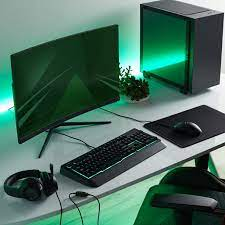
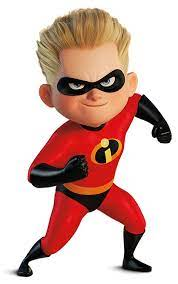

David was born and has spent most of his time in New Jersey, but has spent time living in Turkey, Korea and Afganistan.

David was born and has spent most of his time in New Jersey, but has spent time living in Turkey, Korea and Afganistan.
David chose Graphic Design as major. He chose this becasue he is very interested in computers, but also is drawn towards the artistic side of computers. He believes that Graphic Design was the best fit for his interests.

David does not currently participate in any extracurriculars at Lehigh, but wishes there were clubs such as an Archery club or a Parkore club. Maybe David will be able to bring those to Lehigh in the future!
In his free time David likes to write ideas down for stories to make into animations on day. David is also a fan of gaming and sleeping. His current favorite game is Genshin Impact and will also play the main title Mario games.
David would have egg waffles if he could only have one food for the rest of his life. He did say it really depends on the day you ask him.
David isn't very picky when it comes to the music he listens t0. If he had to choose one he said that Euro Beat remixes of popular songs would be his favoite at the momment.
David would like to be a panda if he could be an animal. He chose this becasue they are able to sleep a lot!
David's favorite sport to watch and play is badminton. He said he really only enjoys watching sports that he plays.

David would like to have super speed if he were able to have a super power.
David would spend some of the money on creating some of the ideas he has, save some for his future and give the rest to his family.